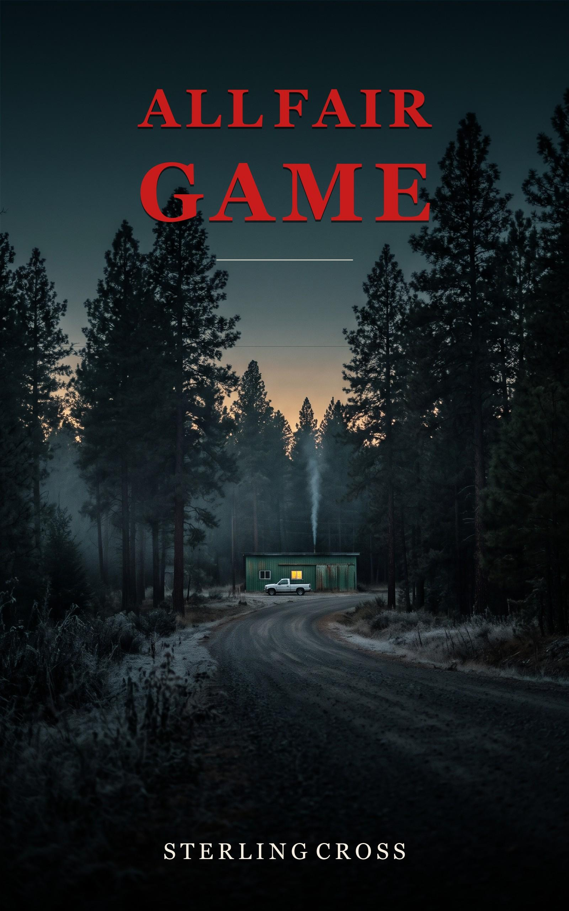

Every man in Colter's Fork has an opinion on the hunters who go missing. Only one has weighed them.
Montana, the first cold week of elk season. A retired road-crew man fails to call his daughter. A hitchhiker is last seen on Highway 2. The sheriff calls it exposure, accident, bad luck.
Rookie deputy Scott Larson, nobody's idea of a detective, keeps a black notebook anyway, and the notebook keeps finding the same quiet man: Tebah Dunmore, the town's butcher. Polite. Punctual. Exact to the ounce. The man who squares every knife on the towel. The man who has placed in every cook-off he's ever entered, and who cannot stand to see a thing out of place.
Scott has a theory nobody wants to hear, a sheriff guarding a secret of his own, and a killer who always finishes what he starts.